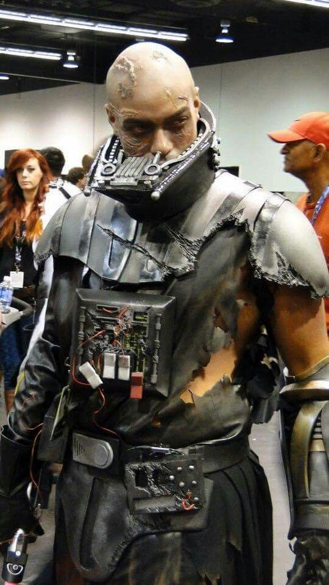
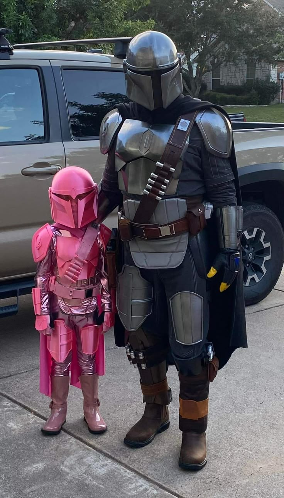
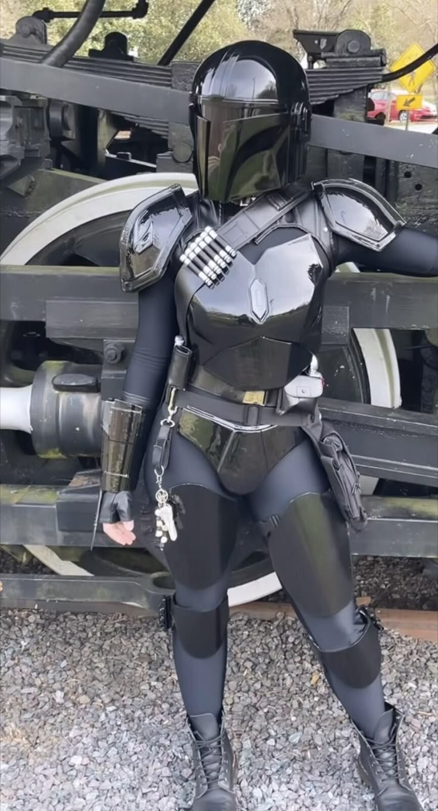
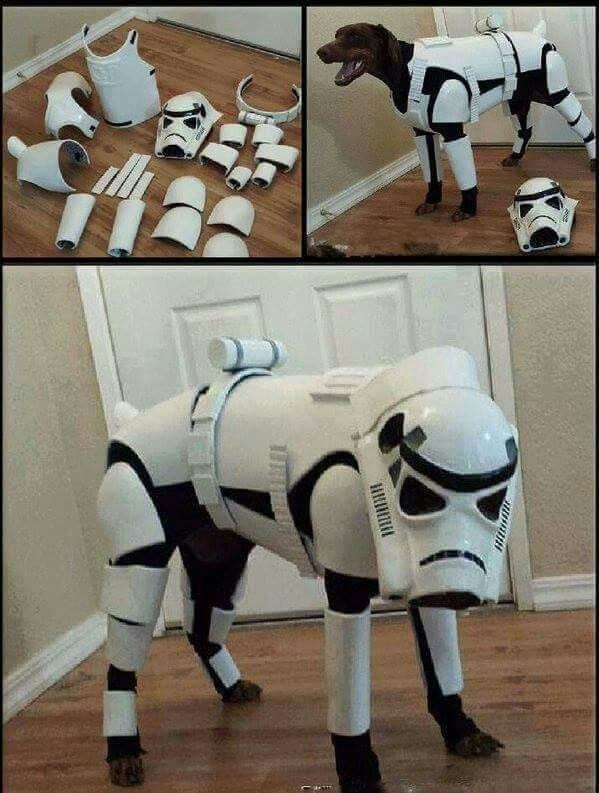
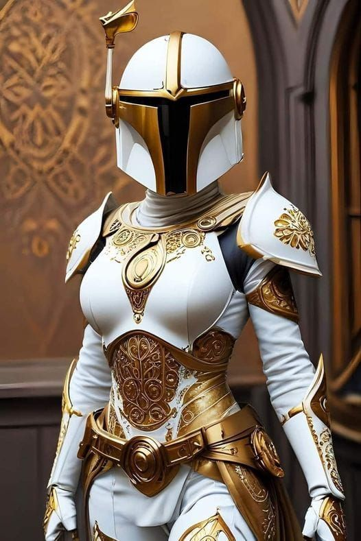
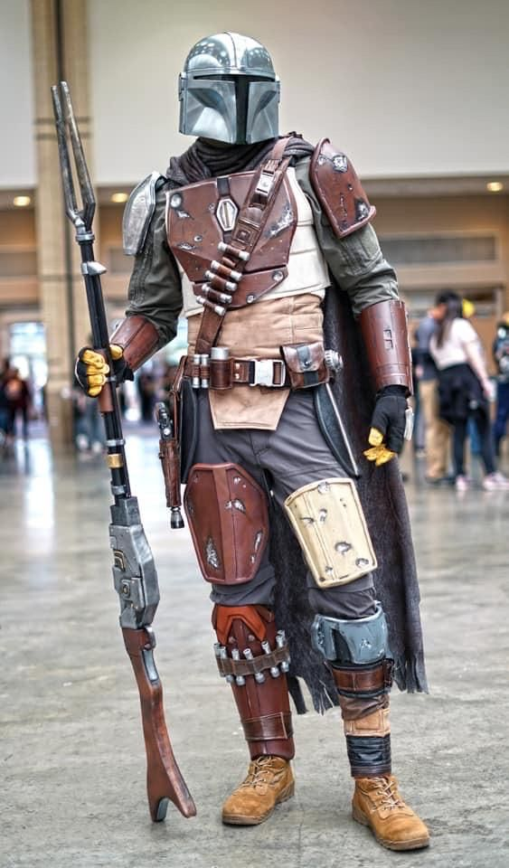
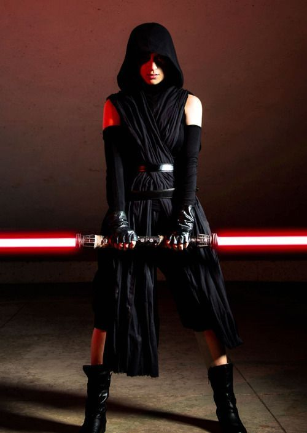
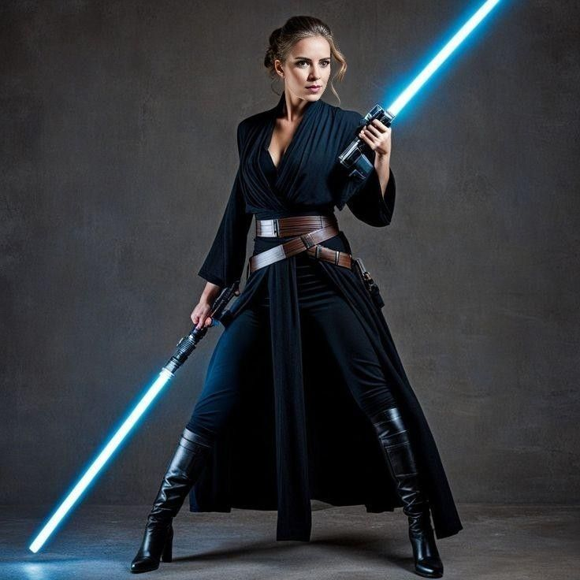

Cosplay Galáctico
Celebramos el arte del cosplay con estos trajes increíbles inspirados en el universo de Star Wars:








Celebramos el arte del cosplay con estos trajes increíbles inspirados en el universo de Star Wars: